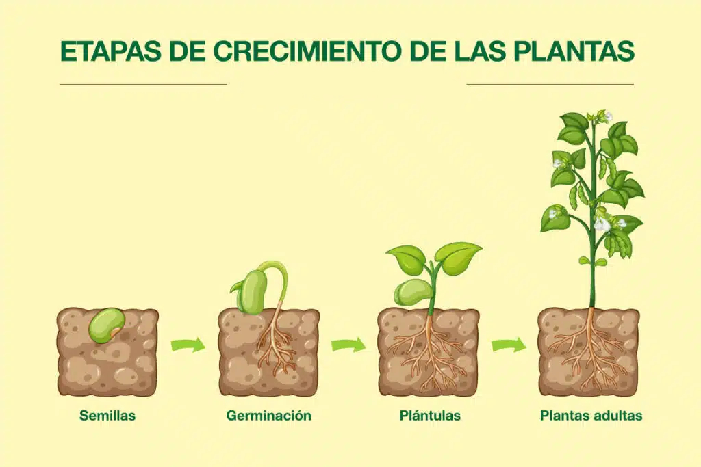
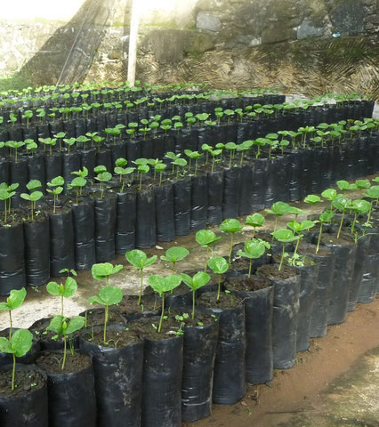
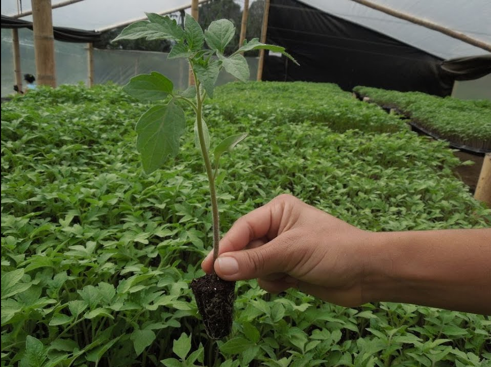

Nuestra Misión
Nuestro compromiso es desarrollar soluciones innovadoras que no solo aumenten la productividad y rentabilidad de los cultivos, sino que también preserven y respeten el medio ambiente.
Valores y Filosofía de Trabajo
Nos guiamos por principios de integridad, innovación y sostenibilidad, asegurando que cada paso en nuestro proceso respete el equilibrio natural y contribuya al desarrollo sostenible.
Compromiso con el Medio Ambiente
Implementamos prácticas de cultivo que reducen el uso de recursos naturales y promueven la biodiversidad, utilizando tecnologías que minimizan el impacto ambiental.
Información para Partes Interesadas
En Invernaderos Mendoza, mantenemos una comunicación transparente con nuestros proveedores, clientes y comunidad, asegurando que todos los involucrados comprendan y compartan nuestros objetivos de sostenibilidad.
Igualdad y Transparencia

Nuestros criterios de contratación priorizan la igualdad de oportunidades, la concienciación ambiental y la seguridad en el trabajo. Buscamos proveedores y subcontratistas que compartan estos valores.
- La concienciación ambiental.
- La prevención de la contaminación.
- El compromiso con la seguridad y salud en el trabajo.